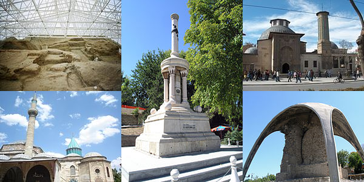

TURİSTLİK YERLER
2009 yılında Konya'yı 1 milyon 717 bin 942 yerli ve yabancı turist ziyaret etti. Bu rakamın 1 milyon 338 bin 113'ünü yerli, 353 bin 233'ünü ise yabancı ziyaretçiler oluşturdu.
Alâeddin Camii
Alâeddin Camii, 1220 yılında Konya'da Anadolu Selçuklu Devleti sultanı I. Alaeddin Keykubad tarafından aynı adı taşıyan tepe üzerinde (Alâeddin Tepesi) inşa ettirilmiş cami.
Sekiz Anadolu Selçuklu Sultanı burada gömülüdür.
- I. Alaeddin Keykubad
- I. Rükneddin Mesud
- I. Kılıç Arslan
- IV. Kılıç Arslan
- II. Süleyman Şah
- I. Gıyaseddin Keyhüsrev
- II. Gıyaseddin Keyhüsrev
- III. Gıyaseddin Keyhüsrev
Alaeddin Tepesi
Alâeddin Tepesi, Türkiye'nin Konya ilinin merkezine bağlı Karatay ilçesinde yer alan tepe. 450 x 350 metre boyunda olup, 20 metre yüksekliğinde olan tepe, höyük olarak adlandırılan protohistorik yerleşim yerlerinden biriydi.
Mevlana Müzesi
Mevlana Müzesi, Konya'da bulunan, eskiden Mevlâna'nın dergâhı olan yapı kompleksinde, 1926 yılından beri faaliyet gösteren müzedir. "Mevlana Türbesi" olarak da anılır. (Yeşil Kubbe) denilen Mevlana'nın türbesi dört fil ayağı (kalın sütun) üzerine yapılmıştır. O günden sonra yapı faaliyetler hiç bitmemiş, 19. yüzyılın sonuna kadar yapılan eklemelerle devam etmiştir. Osmanlı sultanlarının bir kısmının Mevlevi tarikatından olması Türbe'ye özel bir önem verilmesini ve iyi korunmasını sağlamıştır. Müze alanı bahçesi ile birlikte 6.500 m² iken, yeri istimlak edilerek Gül Bahçesi olarak düzenlenen bölümlerle birlikte 18.000 m²ye ulaşmıştır. Bağlı bulunduğu Kültür Bakanlığı'na en çok gelir getiren ikinci müzedir. (Birinci Topkapı Sarayı müzesi.) Mevlana hakkında menkıbelerin anlatıldığı Ahmed Eflaki'nin kitabı "Arifler'in Menkıbeleri"nde[1] Mevlana'nın babası için türbe yaptırmak isteyen devrin sultanına "gök kubbeden daha görkemlisini yapamayacağınıza göre zahmet etmeyin" dediği rivayeti yer alır. Türbe, Mevlana'nın ölümünden sonra inşa edilmiştir.
Camiler
Alaaddin Camii
İplikçi Camii
Sahipata Camii
Sadrettin Konevi
Camii Şems-i Tebrizi Camii
Kadı Mürsel Camii
Tursunoğlu Camii
Selimiye Camii
Aziziye Camii
Şerafettin Camii
Kapu Camii
Nakiboğlu Camii
Kiliseler
- Aya Elenia Kilisesi
- Konya Saint Paul Kilisesi
- Sille Siyata Manastırı
Çatalhöyük
Çatalhöyük günümüz Konya Şehri'nin güneydoğusunda, Hasandağı'nın yaklaşık olarak 136 kilometre uzağında, Konya Ovası'na hakim buğdaylık arazide bulunmaktadır. Doğu yerleşimini, en son Cilalı Taş Devri sırasında ovadan 20 metre yüksekliğe kadar ulaşan bir yerleşim birimi oluşturmaktadır. Ayrıca, batıya doğru da ufak bir yerleşim birimi ve birkaç yüz metre doğuya doğru da bir Bizans yerleşimi bulunmaktadır.
Müzeler
Şehirde çeşitli müzeler de bulunmaktadır.
Mevlana Müzesi
Konya Arkeoloji Müzesi
Konya Atatürk Evi Müzesi
Karatay Medresesi (Çini Eserler Müzesi)
Sırçalı Medrese (Mezar Anıtları Müzesi)
İnce Minare (Taş-Ahşap Eserleri Müzesi)
Konya Etnoğrafya Müzesi
Konya İzzet Koyunoğlu Şehir Müzesi